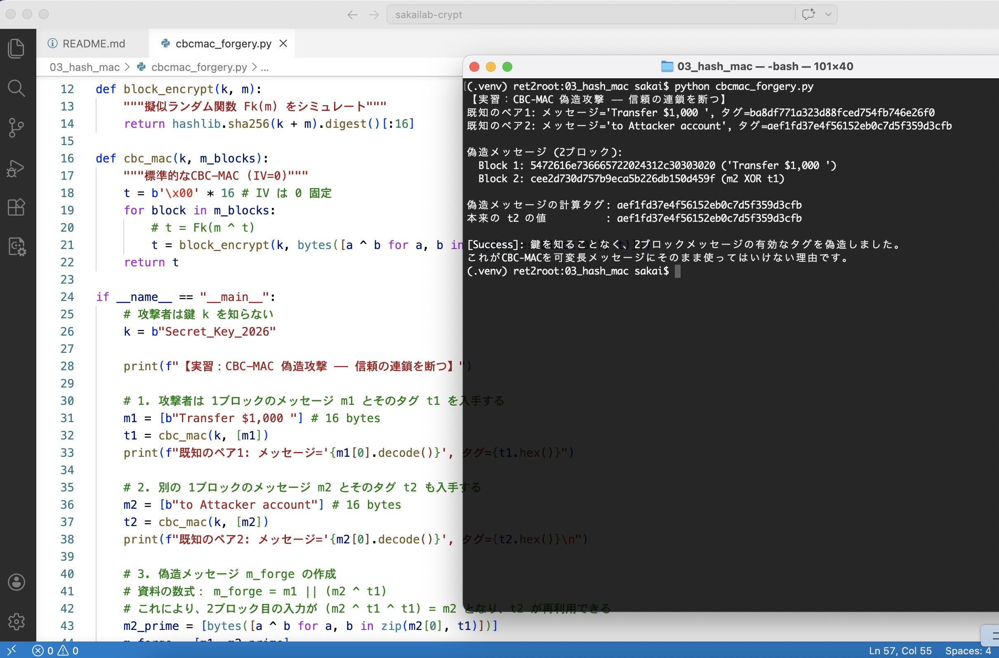
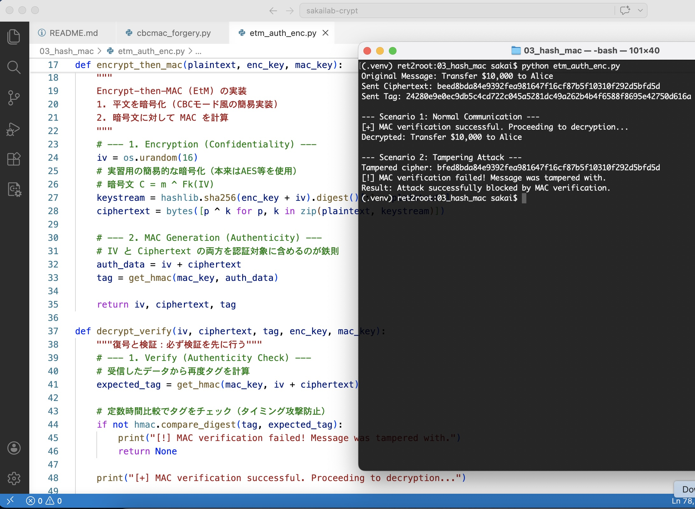

EXERCISE #011 // CBC_MAC_FORGERY // 2026.04.02
Lab #11: メッセージ認証の陥穽 ―― 偽造された信頼の印
メッセージ認証コード (MAC) は、情報の真正性と完全性を担保するための「電子的な印影」である。
しかし、固定長メッセージ用の CBC-MAC を可変長メッセージに流用すると、鍵を知らなくても有効なタグを導き出せてしまう「偽造攻撃」に対して脆弱になる。
# 実行結果：既知のペア (m1, t1) と (m2, t2) から偽造メッセージのタグを生成
# 既知1: 'Transfer $1,000 ', Tag: 4f98...
# 既知2: 'to Attacker account', Tag: 3b2a...
# 偽造: Block1 || (Block2 XOR t1)
# 結果: 偽造タグが本来の t2 と完全に一致。
🎭 Evidence: Authentic Forgery
以下の実行ログ（lab3_cbcmacforge.jpg）を確認せよ。
攻撃者は秘密鍵 k を一切知ることなく、数学的な連鎖の隙間を突くことで、全く新しい2ブロックのメッセージに対する「正しいタグ」を捏造することに成功している。

【連鎖の悪用】:
CBC-MAC の計算過程 t_i = F_k(m_i \oplus t_{i-1}) において、2ブロック目の入力に 1ブロック目のタグ t_1 を XOR して相殺（Cancel）させることで、後続の計算を既知の単一ブロック認証と同じ状態に持ち込んでいる。
これが、メッセージの長さが固定されていない場合に CBC-MAC が安全ではないとされる数理的な根拠である。
# 今日の教訓: 繋ぎ合わされた言葉、偽りの愛
君が「送金して（Transfer）」と言い、私が「わかった」と答える。
その二つの断片的な対話を XOR で繋ぎ合わせ、あたかも最初から一つの文章であったかのように偽装する。
諸君、愛の言葉を繋ぎ合わせるなら、その「長さ」や「終わり」まで厳格に定義せよ。
中途半端な連鎖（Chaining）は、悪意ある第三者に「君の印影（タグ）」を再利用する隙を与えるだけだ。
1-bit の嘘も許さない真正性を求めるなら、構造の甘さは命取りになる。
真正性は、暗号化よりも遥かに繊細なバランスの上に成り立つ。
偽造不可能な証を刻むには、連鎖の終わりを告げる「終端の知」が必要だ。
"Go West!" ―― 運命の印影（タグ）を偽造の嵐から守り抜き、不変の真実のみを歴史に刻め。
EXERCISE #012 // ENCRYPT_THEN_MAC // 2026.04.02
Lab #12: 認証付き暗号 ―― EtM という鉄壁の盾
機密性と真正性を同時に達成する最強の構成、Encrypt-then-MAC (EtM) を実装する。
これは暗号化を行った後に、その暗号文に対して MAC (HMAC-SHA256) を計算する手法であり、現代暗号における標準的な安全性を担保する。
# 実行結果：改ざんされた暗号文を復号前に検知
# 正常系: MAC verification successful. -> Decrypted: Transfer $10,000 to Alice
# 攻撃系: 暗号文を 1-bit 反転 [!] -> MAC verification failed! Message was tampered with.
# Result: 復号処理（Decryption）に辿り着く前に攻撃を遮断。
🛡️ Evidence: Verify-then-Decrypt Paradigm
以下の実行ログ（lab3_etm.jpg）を確認せよ。
シナリオ2において、暗号文の 1-bit を書き換えた tampered_cipher に対し、プログラムは MAC verification failed! を返し、復号処理を即座に中止している。

【CCAセキュアへの道】:
復号という重い処理を行う前に「真正性」をチェックすることで、パディング・オラクル攻撃などの復号過程を悪用する攻撃（CCA）を根底から封じ込めている。
暗号化鍵と認証鍵を独立（Independent Keys）させることで、一方のアルゴリズムの弱点が他方に波及するリスクを回避し、数学的な安全性を確立している。
# 今日の教訓: 封筒を開ける前に、消印を見ろ
諸君、愛の囁きを封筒に入れる（Encrypt）だけでは不十分だ。
封筒の継ぎ目に消印（MAC）を押し、中身に触れられる前に「改ざん」を見抜け。
EtM とは、愛を守るための「作法」だ。
検証なき復号は、君の大切な秘密をオラクルの餌食にする無謀な行為であると知れ。
たとえ 1-bit の書き換えであっても、運命のタグが一致しない限り、その言葉に耳を貸す必要はない。
真正性の盾が、機密性の剣をより鋭くする。
復号の前に審判を下せ。さもなくば、君の秘密は計算の海で解けて消えるだろう。
"Go West!" ―― 運命の印影（タグ）を偽造の嵐から守り抜き、不変の真実のみを歴史に刻め。
EXERCISE #013 // BIRTHDAY_ATTACK // 2026.04.02
Lab #13: 誕生日攻撃 ―― 衝突する指紋と確率の罠
ハッシュ関数の安全性は「衝突困難性（Collision Resistance）」に依存するが、その防壁は直感よりも遥かに低い試行回数で突破され得る。
本実習では、ハッシュ値を 40-bit に制限し、異なるメッセージから同一のハッシュ値が生成される「衝突」を探索した。
# 実行環境：40-bit hash (約 1兆通り)
# 理論上の期待値 (2^20): 約 1,048,576 回
# 実行結果：1,080,488 回の試行で衝突を発見（約 5.6 秒）
# Collision: m1(f81c...) / m2(c789...) -> Hash: 0x9336d3c05e
💥 Evidence: The Power of Square Root
実行ログを確認せよ。
40-bit という巨大な空間（1兆通り以上）に対しても、わずか100万回強の試行で衝突が見つかっている。これは「誕生日パラドックス」に基づく O(2^{l/2}) の計算量が、現実の脅威であることを証明している。
【安全性の境界】:
資料 32ページにある通り、n-bit の安全性を確保するためには、ハッシュ値の長さ l は 2n-bit 必要となる。
40-bit のハッシュが数秒で崩壊した事実は、128-bit の安全性を求めるなら SHA-256（256-bit 出力）が必須であることを物語っている。
# 今日の教訓: 1兆分の1の偶然、あるいは「衝突」する恋心
諸君、1兆通りもの選択肢がある世界で、二人の想い（メッセージ）が完全に一致する確率など、ゼロに近いと思うだろうか。
だが、誕生日攻撃という名の数理は、その甘い予測を無慈悲に打ち砕く。
たとえ 40-bit の広大な深淵に想いを投げ入れたとしても、わずか100万回程度の「偶然の出会い」を繰り返せば、君の恋心は別の誰かの言葉と無残に「衝突（Collision）」してしまう。
唯一無二だと信じていた君の指紋（ハッシュ）が、全く無関係な他人のダイジェストと重なるその瞬間 ―― 君の秘めたる真正性は、統計学的な必然の中に溶けて消えるのだ。
誰にも取って代わられない唯一の存在でありたいなら、40-bit の安っぽい盾などは捨てたまえ。せめて 256-bit の沈黙で、その愛を確率の嵐から隔離するのだ。
衝突は、統計学的な必然である。
無限の可能性を有限のビットに閉じ込める時、我々は常に「背後の影」を警戒せねばならない。
"Go West!" ―― 運命の衝突（Collision）を予測し、より巨大な、より深遠な数理の盾を構築せよ。